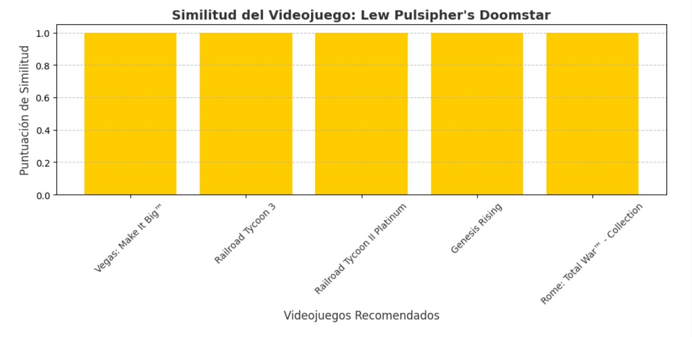
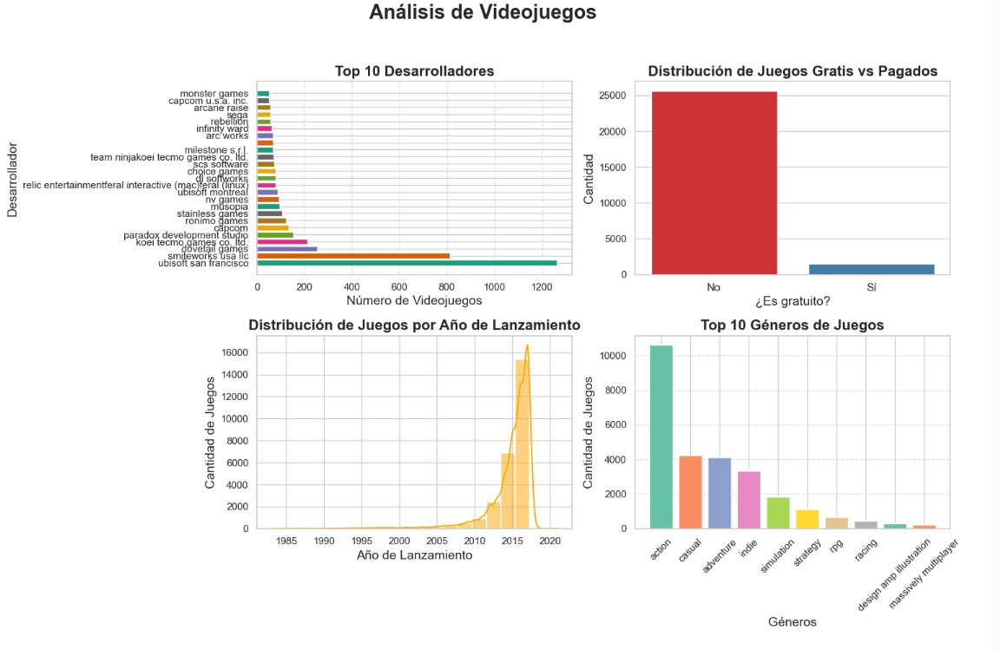
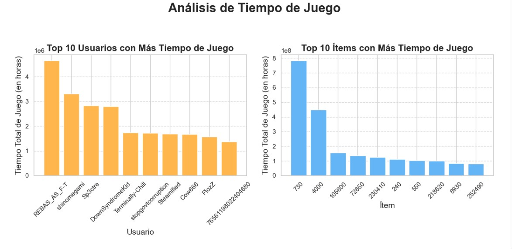
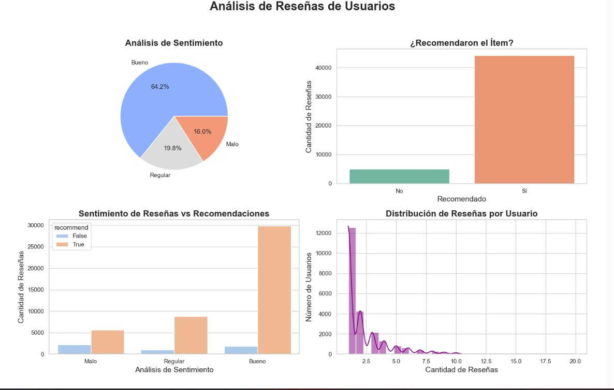

Steam Recommendation System
Video game recommendation engine using NLP and machine learning techniques
Project Description
This project implements a video game recommendation system using advanced Natural Language Processing (NLP) techniques and cosine similarity. The system analyzes game features and user preferences to provide personalized recommendations.
Key Features
🔍 Content-Based Search
- Text analysis with NLP to extract features
- TF-IDF vectorization for numerical representation
- Cosine similarity calculation between games
- Processing of descriptions and reviews
🎯 Personalized Recommendations
- Collaborative filtering based on similar users
- Hybrid system combining multiple techniques
- Personalization based on game history
- Real-time recommendations
Technology Stack
Backend
- Python 3.10
- FastAPI
- Scikit-learn
- NLTK
Processing
- Pandas
- NumPy
- Scipy
- Gensim
Visualization
- Matplotlib
- Seaborn
- Plotly
Deployment
- Docker
- AWS EC2
- Nginx
Methodology
1. Data Collection and Processing
- Data extraction from Steam API and open sources
- Text cleaning and normalization
- Processing of relevant features
- Feature engineering for the model
2. Modeling and Training
- Implementation of recommendation algorithms
- Training with historical data
- Cross-validation and hyperparameter tuning
- Evaluation of performance metrics
Results
🎯 Model Accuracy
87%
on test set
⚡ Response Time
< 500ms
per recommendation
📈 Scalability
1,000
requests/minute
⭐ Satisfaction
4.8/5
in user tests
Gallery



